Durational valuesDurational Values are those symbols (“note values”) that are used to represent the relative length of a particular sound in music. are symbols that represent time and action in musical space: they delineate and mark off varying values of sound (and silence) in a composition. Additionally, they are proportional to one another as to how they may be divided from larger into smaller values.
There have been many differing notational systems throughout the history of music. In the context of other study, you may encounter these various and sundry systems from early Western notational traditions. Our current system of notation evolved from these early systems, incorporating aspects of many.
Let us first examine how durational values are drawn:
Figure 1.1 Components
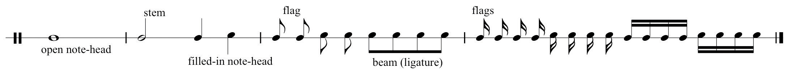Note values may be “open notes” (not filled in or blackened), or “filled-in notes.” In the context of how musical time is organized (discussed below), these will have greater or lesser lengths or time spans.Chapter 2 "The Elements of Pitch:Sound, Symbol, and Tone" will discuss general rules and practices as to how note values are drawn in the context of pitch placement. In the following example they are not yet assigned any particular value: only proportional values in relation to each other.
Below are examples of basic durational values and their common names. Proper names for these values are in parentheses. These names are commonly used in the United Kingdom and Commonwealth countries, as well as by some academics.
Figure 1.2 Durational Values and Nomenclature
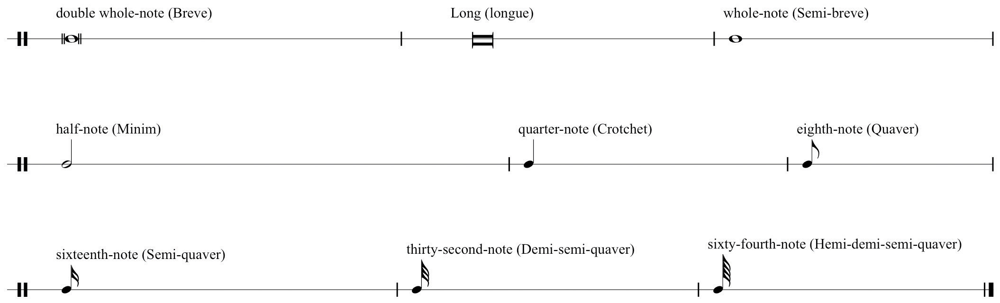There are rare examples of “One-hundred and twenty-eighth-notes.” A notable example is found in the First Movement Introduction to Beethoven’s “Pathetique” Sonata No. 8, Opus 13.
These occur at the end of the Introduction. See this link:
http://imslp.org/wiki/Piano_Sonata_No.8,_Op.13_(Beethoven,_Ludwig_van)
Durational values are held in proportion to one another. Observe that each value is proportionally related to adjacent values. If we assign the arbitrary value “1n” to a whole-note, then the half-note equals 1/2n. Therefore two half-notes are required to equal a whole note, two quarter-notes equal a half-note and so on.
Figure 1.3 Durational Value Chain
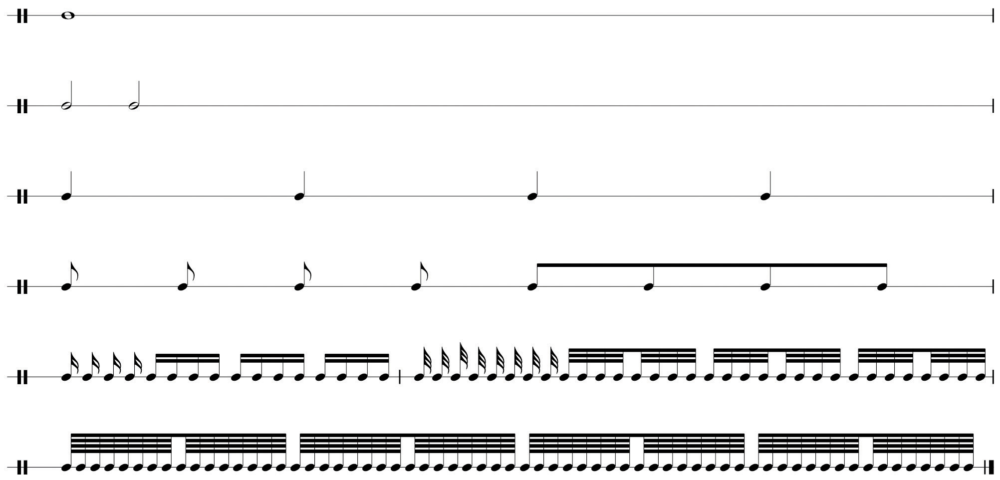At times notes may have a diagonal slash (or slashes) through the stem, or below a note value that has no stem. These slashes are interpreted one of two ways:
As a notational convenience, slashes represent flags, denoting embedded smaller durational values:
Figure 1.4 Smaller Value “Slashes” (Tremolo)
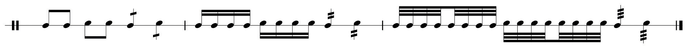These can be interpreted as “eighth-notes in the space of a half-note” (4), or sixteenth-notes in the space of a quarter,” (4) and so on. This is merely a notational convenience employed as needed.
Durational values may have small periods (“dots”) appended to them. Originally, this evolved as a notational “convenience,” a proportional division indication, or as a segment boundary. Dotted valuesDurational Values may be non-dotted or dotted. Dotted Values have three interpretations: (1) The dot represents the addition of half the original value; (2) The dotted value may divide into two lower dotted values; (3) Or the dotted value may divide into three non-dotted values. This potential division into three is critical for comprehending Compound Meter. have three different interpretations:
A dotted value may represent the addition of half of the original duration, or “half again as much as the original value” (“1+1/2n”).
Figure 1.5 Dotted Values: First Interpretation
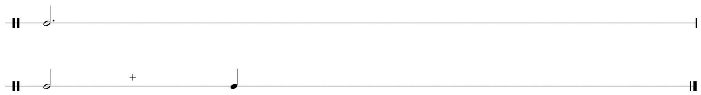A dotted value may be divisible into three non-dotted values:
Figure 1.6 Dotted Values: Second Interpretation
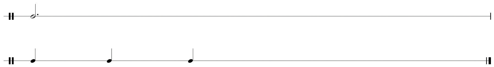A dotted value may be divisible into two smaller dotted values:
Figure 1.7 Dotted Values: Third Interpretation
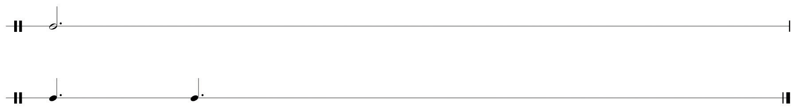These varying uses of dotted values shall come into focus in subsequent discussions concerning meter and notational practice in Section 1.2 "Pulse, Tempo, and Meter" and Section 1.3 "Music Notation Practices" below. As with non-dotted values, dotted values are in proportion to one another as well. Figure 1.8 "Dotted Values" shows the proportional chain of dotted values.
Figure 1.8 Dotted Values
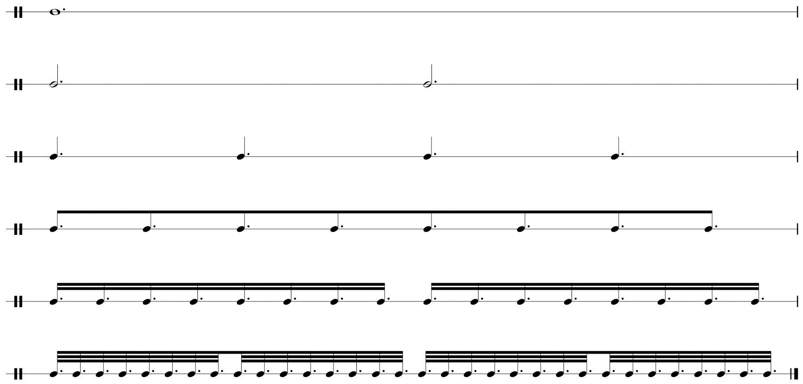Just as durational values represent the length of sound in music, symbols of equivalent value represent the length of silence. These are called restsRests are the symbols used to represent the relative length of silence in music. They are equivalent in value to durations.. Figure 1.9 "Rests" shows rests and their labels. As with durational values, rests are proportional to one another also.
Figure 1.9 Rests
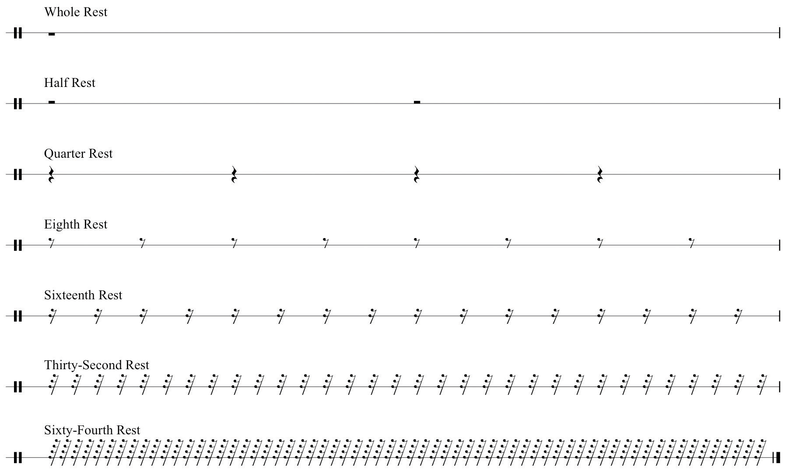The student should understand:
Practice drawing durational values and rests following the model below. Make sure to draw noteheads correctly (no “stick figures” please!).
Figure 1.10 Durations and Rests
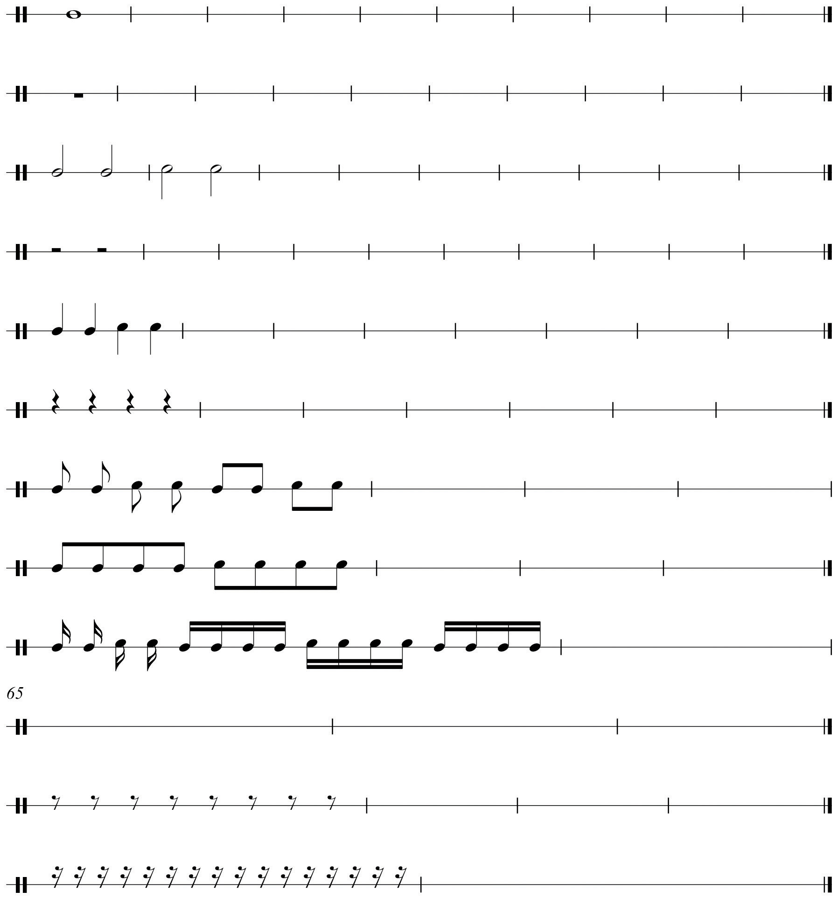For each value given, draw three lower divisions: for example, given a whole-note, draw two half-notes, four quarter-notes, eight eighth-notes. Use flags and beams (ligatures). Make sure to align and space properly. See sample solution.
Figure 1.11 Duration Divisions
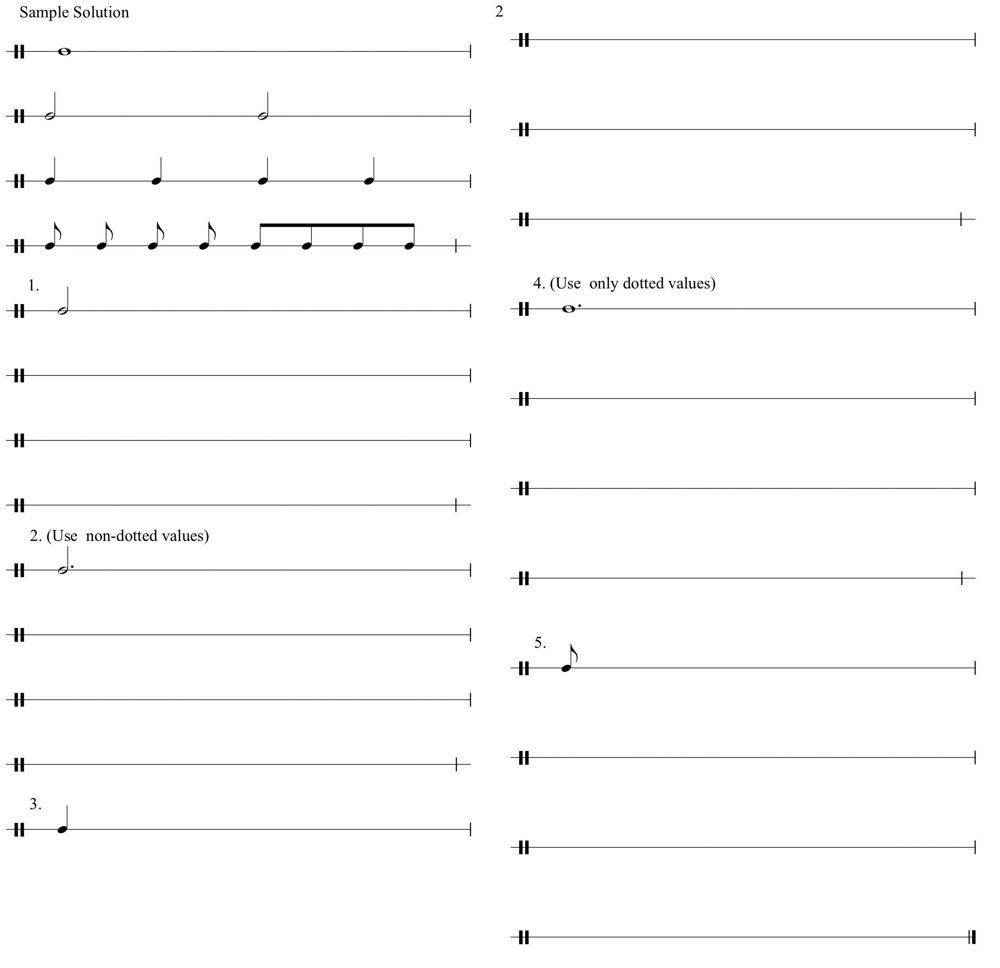For each value given below, draw the appropriate equivalent rest.
Figure 1.12 Equivalent Rests
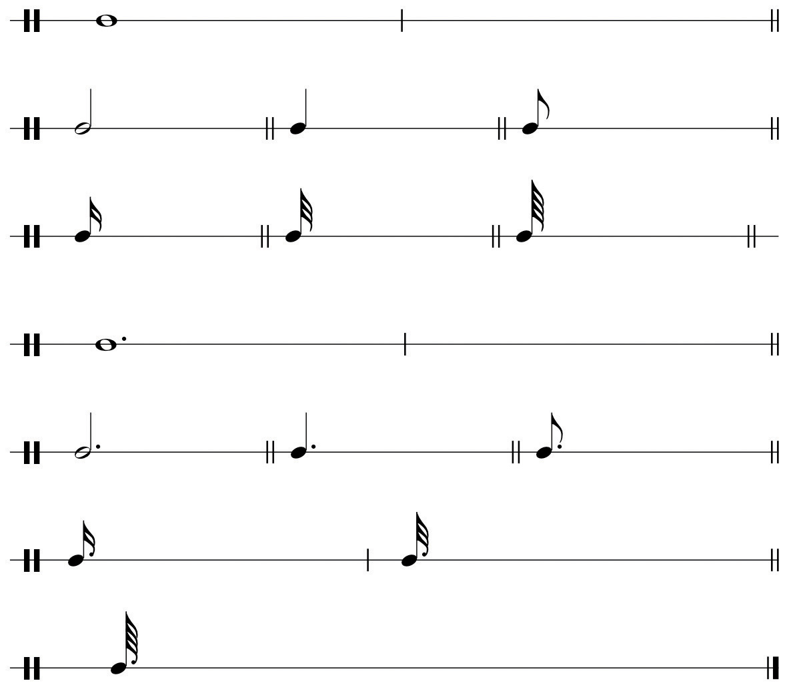For each dotted value:
Figure 1.13 Dotted Values
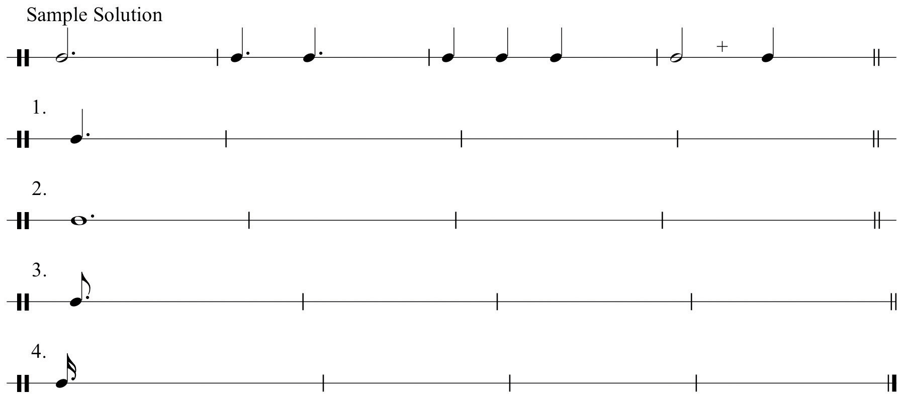For each incomplete example below, add the appropriate durational value that will complete the background value.
Figure 1.14 Incomplete Values
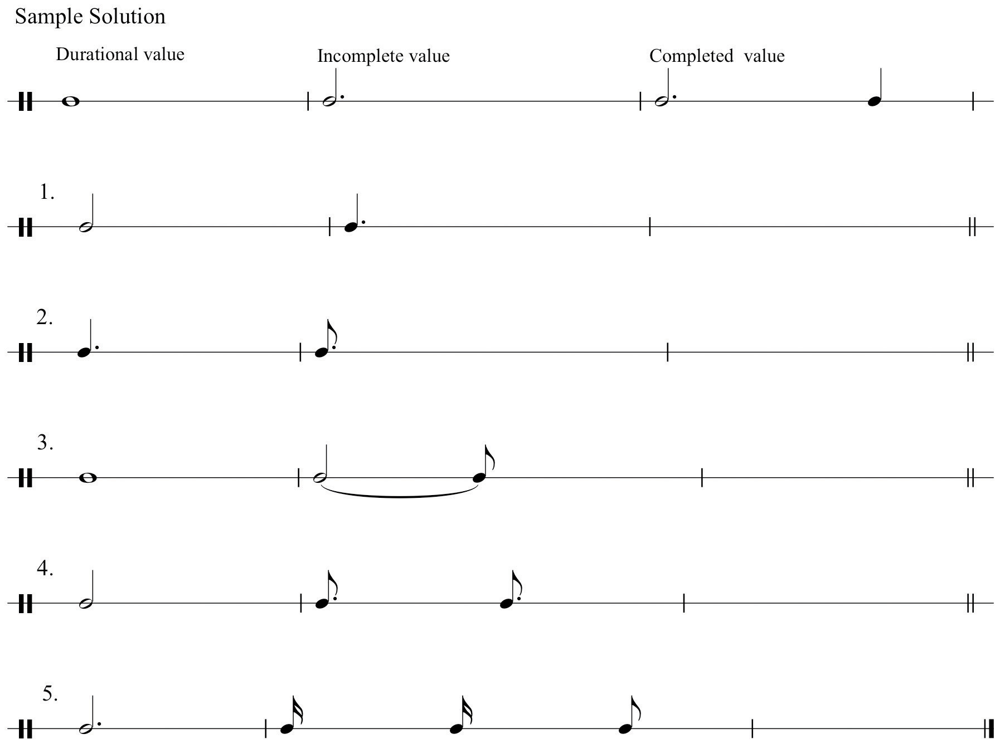